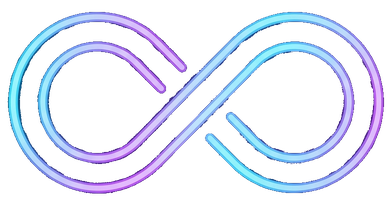

Oopl turns any video into a seamless, crossfaded VJ loop. Drop in a batch of clips, pick a format, and get loops ready for Resolume, VDMX, MadMapper or TouchDesigner.
Portable · FFmpeg included · Windows 10/11 & macOS 14+ (Apple Silicon)
Set it once, queue up a whole folder, and walk away.
Blends the end of your clip into its start, from 0.5 s up to 60 s, so the loop point disappears.
Drag in files or whole folders (subfolders included). Tick the ones you want and hit Start Batch.
HAP, Hap Q and DXV for GPU playback, plus ProRes, MJPEG and MP4 when you need them.
Skip a shaky intro and set the exact loop length, so every clip in a set matches.
One-click 4K, 1080 and 720 presets, or type a custom resolution for odd LED walls.
A single app with FFmpeg bundled. Copy it anywhere and run, on Windows or Mac.
Drag .mp4, .mov, .avi or .mkv files (or folders) onto the window.
Choose a format and quality, set the crossfade, and optionally trim, set length and scale.
Oopl renders each loop and saves it next to the original, or to a folder you choose.
| Format | Best for | Quality options |
|---|---|---|
| HAP .mov | Resolume, VDMX, MadMapper, TouchDesigner, Millumin | Hap or Hap Q (smoother gradients, ~2× size) |
| DXV .mov | Resolume Avenue / Arena | Normal (DXT1) |
| ProRes .mov | Premiere, Final Cut, DaVinci Resolve | Proxy, LT, Standard, HQ |
| MJPEG .mov | Older or lightweight VJ software | Q 31 → 2 |
| MP4 .mp4 | Sharing, web, social, phones | H.264, CRF 35 → 18 |
Grab the latest build from GitHub Releases. Oopl isn't code-signed yet, so your OS will ask once before the first launch.
.zip and unzip it anywhere.Oopl.exe to start..zip, unzip it, and drag Oopl.app into Applications.Built-in players on Windows and Mac don't support them. Preview in your VJ software, or use the free VLC player.
That's macOS blocking an unsigned app. Open Terminal and run xattr -cr /Applications/Oopl.app, then open Oopl again.
Rosetta 2 is missing. Install it in Terminal with softwareupdate --install-rosetta --agree-to-license.
The release build is Apple Silicon only, but you can build your own copy from source. See BUILD_INSTRUCTIONS.md.
Never your originals. Output gets a tag like _oopl in its name. If an output with that exact name already exists, it's replaced, so change the tag or output folder to keep older versions.
Full details are in the user manual.